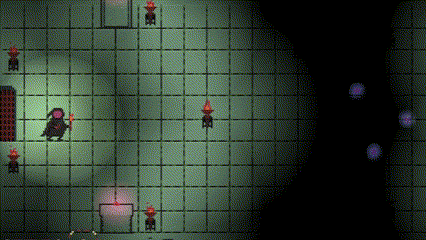

The Crypts of Severus
Unity, C#
A fantasy dungeon crawler where only when you reach the end of the dungeon, enemies will attack. This game was initially made in one week for game dev club's Summer 2023 jam, but was later improved upon over the rest of that summer. I did everything on this project except for the music.
My main accomplishments with this game included the lighting design, implementation of satisfying juice and crunch mechanics, designing varying enemy types and boss encounters, and programming the backend for the in game enchantment system.
- Dynamic Lighting:
In creating the lighting for the game, there was a minor problem. When combining the player's hand-held light with the environmental light from the torches, it would create a very bright effect that was somewhat distracting. In order to remedy this, I decided to scale the lighting of the torches based on the players position. Mathematically, the scale was interpolated with the magnitude of the distance-between vector divided by a pre-defined falloff range. It ended up in a much smoother looking lighting effect.

.png)
.png)
.png)
.png)